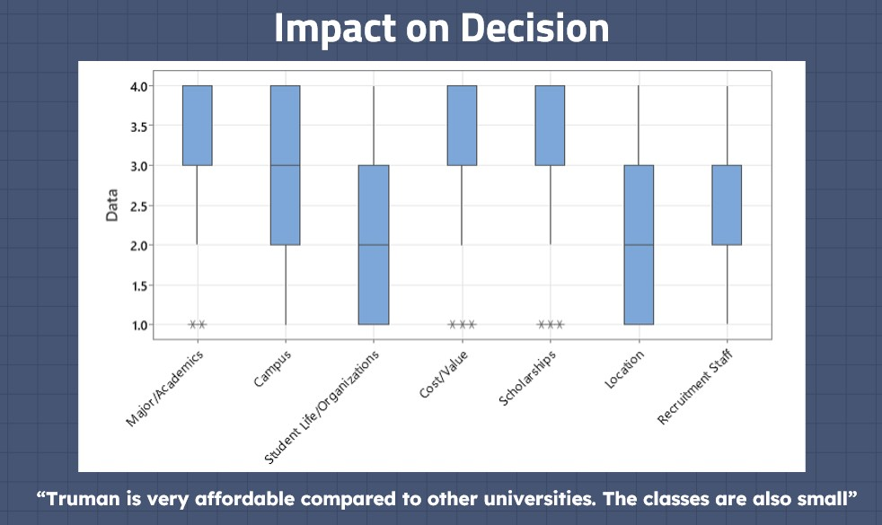

Consulting Experiences
Here's some examples of statistical consulting I've done for others.
International Students Survey
Me and two other students did a consulting project for the Truman State international office. Our goal was to find how what brought international students to Truman. We met with our client to discuss the project, then together created a survey to administer. Once the survey results were in, we analyzed the data and created a report. Lastly, we made a presentation to convey our findings to our client and other audience members who were not experts in the area. We used R and Minitab to analyze the data and generate visualizations.
Overall, we concluded that Truman is an attractive school for international students because of its low cost and strong academics. We found that students from different continents have different academic interests, so they should be marketed differently. Lastly, the most common ways that these students find out about Truman was through a family member, stressing the importance of someone an international student knows attending the college on their chances of choosing Truman.
To view the whole presentation, click on the graph below.
